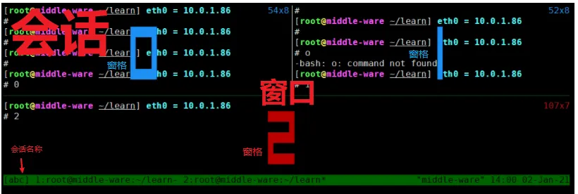
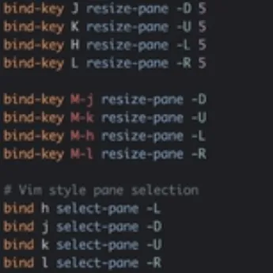

Linux: 高效linux工具
- TAGS: Linux
tmux-会话管理
安装：
yum install tmux
tmux基本结构

Session 会话
输入tmux命令，就会自动新建一个会话。这个会话默认有一个Window（也即窗
口）。Tmux中可以拥有多个会话，多个会话之间可以来回无缝切换。
Window 窗口
一个 Session 中，可以开启多个 window。这些 window 同属一个Session，
并由其管理。
Panel 窗格(面板)
Panel是比 Window 更小的界面元素。由 window分割出来的单位就叫做 Panel。
在同一个 window 中，通过控制光标在分割出的Panel 中随意移动用来选定当
前激活状态的 Panel。
三者之间的关系是：Session -> Window -> Panel
启动与退出
tmux # 输入tmux命令，就进入了 Tmux 窗口。 exit # 输入exit命令，就可以退出 Tmux 窗口。即杀死会话
前缀键、命令模式
- 在窗口中，默认的前缀键prefix是Ctrl+b，即先按下Ctrl+b，快捷键才会生效。
- 在窗口中，ctrl+b输入:冒号进入命令模式，类似vim中的扩展模式
帮助命令的快捷键: Ctrl+b ? 按下 ESC 键或q键
会话管理
常用命令
tmux new 创建默认名称的会话（在tmux命令模式使用new命令可实现同样的功能，其他命令同理，后文不再列出tmux终端命令） tmux [new -s 会话名 -n 窗口名] # 创建会话 tmux ls # 显示会话列表 tmux a # 连接上一个会话 attach-session可缩写为attach at a tmux a -t <会话名称|会话编号> # 连接指定会话 tmux rename -t s1 s2 # 重命名会话s1为s2 tmux kill-session # 关闭上次打开的会话 tmux kill-session -t s1 #关闭会话s1 tmux kill-session -a -t s1 ＃ 关闭除s1外的所有会话 tmux kill-server # 关闭所有会话
快捷键
#快捷键前缀Ctrl+b s 列出会话，使用上下方向键可进行会话切换。同时使用左右方向建可以选择窗口。(推荐) $ 重命名会话 d 分离（退出）当前会话 D 分离（退出）指定会话 ( 切换到前一个会话 ) 切换到下一个会话 L 切换到最近使用的会话 ~ 列出提示信息缓存；其中包含了之前tmux返回的各种提示信息 Ctrl+z 挂起当前会话 ? 命令面板
命令模式
:new<回车> 启动新会话
范例：会话开始到结束
#1 新建会话 tmux # 新建一个无名称的会话 tmux new -s demo # 新建一个名称为demo的会话 #2 断开当前会话 tmux detach # 断开当前会话，会话在后台运行 #或者快捷键组合 Ctrl+b + d #2 进入会话 tmux a # 默认进入第一个会话 tmux a -t demo # 进入到名称为demo的会话 #4 关闭会话 tmux kill-session -t demo # 关闭demo会话 tmux kill-server # 关闭服务器，所有的会话都将关闭
窗口管理
在当前会话中使用
快捷键
#快捷键前缀Ctrl+b c 创建新窗口 n 切到后一个窗口 p 切到前一个窗口 , 重命名当前窗口 w 列出当前会话所有窗口。使用j k或上下方向键选择窗口 0~9 选择编号0~9对应的窗口 & 关闭当前窗口 或 exit # 其它： . 修改当前窗口索引编号 ' 切换至指定编号（可大于9）的窗口 f 查找窗口
命令模式
swap-window -s 3 -t 1 交换 3 号和 1 号窗口 swap-window -t 1 交换当前和 1 号窗口 move-window -t 1 移动当前窗口到 1 号
窗格管理
#快捷键前缀Ctrl+b % 垂直分割 " 水平分割 <space> 空格键 - 切换默认布局，重新排列当前窗口下的所有窗格，横和竖2种布局 方向键 根据方向键切换窗格 q 显示窗格编号，在序号出现期间按下对应的数字，即可跳转至对应的窗格 z 切换窗格最大化/最小化。界面下方显示`*Z`字样表示该窗格在窗口中最大化。 t 显示时钟。然后按enter键后就会恢复到shell终端状态 x 关闭窗格 或 exit [ 进入复制模式，滚屏查看，支持 vim 上下翻页快捷键。ctrl+n向下 ctrl+p向上同时支持方向键，按q退出复制模式 Ctrl+方向键 以1个单元格为单位移动边缘以调整当前面板大小 o 顺时针切换窗格 { 与上一个窗格交换位置 } 与下一个窗格交换位置，光标跟随到下一个窗格 ; 选择上次使用的窗格 Ctrl+o 逆时针旋转当前窗口中窗格，光标位置不动 ! 将当前窗格置于新窗口 i 显示当前窗格信息
命令模式
# 调整窗格尺寸 : resize-pane -D 当前窗格向下扩大 1 格 : resize-pane -U 当前窗格向上扩大 1 格 : resize-pane -L 当前窗格向左扩大 1 格 : resize-pane -R 当前窗格向右扩大 1 格 : resize-pane -D 20 当前窗格向下扩大 20 格 : resize-pane -t 2 -L 20 编号为 2 的窗格向左扩大 20 格 : resize-pane -t 2 -U 20 编号为 2 的窗格向上扩大 20 格
复制模式特殊说明
如果想滚动一个空格的内容可以使用复制模式。参考：https://qastack.cn/superuser/209437/how-do-i-scroll-in-tmux
配置文件
vim ~/.tmux.conf set -g mouse on #开启鼠标支持，方便切换焦点、改变窗口大小 set -g prefix C-s #将C-b前缀换成C-s 可选
使用别人的配置
https://github.com/pangliang/oh-my-tmux
#https://github.com/gpakosz/.tmux cd git clone https://github.com/gpakosz/.tmux.git ln -s -f .tmux/.tmux.conf cp .tmux/.tmux.conf.local . #https://github.com/namtzigla/oh-my-tmux
- =<prefix>=意味着您必须按Ctrl+a或Ctrl+b
<prefix> m打开或关闭鼠标模式
按vim方式来行动窗口

常用插件
# git clone https://github.com/tmux-plugins/tpm ~/.tmux/plugins/tpm , use prefix + I install plugins # List of plugins set -g @plugin 'tmux-plugins/tpm' #插件管理器 tpm set -g @plugin 'tmux-plugins/tmux-sensible' # set -g @plugin 'christoomey/vim-tmux-navigator' # vim tmux自由切换 set -g @plugin 'tmux-plugins/tmux-resurrect' # 保存/恢复 tmux 打开的会话 set -g @plugin 'tmux-plugins/tmux-continuum' # 自动定时保存和自动恢复会话
1自动保存和恢复 tmux 会话
#安装 tmux 的插件管理器 tpm，有了它安装插件就会非常简单了 git clone https://github.com/tmux-plugins/tpm ~/.tmux/plugins/tpm #之后需要安装两个插件:
- tmux-resurrect
保存/恢复 tmux 打开的会话 - tmux-continum
自动定时保存和自动恢复会话
第一个插件其实就可以了，安装完之后用 prefix + Ctrl-s 和 prefix +
Ctrl-r 就可以保存和恢复了 (s/r 表示save和restore, 这里 tmux默认的
prefix 前缀是 ctrl+b)。
自动定时保存，只需要在你的 ~/.tmux.conf 最下边加上如下配置就好了
# git clone https://github.com/tmux-plugins/tpm ~/.tmux/plugins/tpm , use prefix + I install plugins # List of plugins set -g @plugin 'tmux-plugins/tpm' # # plugins # prefix + Ctrl-s - save; prefix + Ctrl-r - restore. https://github.com/tmux-plugins/tmux-resurrect set -g @plugin 'tmux-plugins/tmux-resurrect' # 保存/恢复 tmux 打开的会话 set -g @plugin 'tmux-plugins/tmux-continuum' # 自动定时保存和自动恢复会话 # restore vim/neovim session set -g @resurrect-strategy-vim 'session' #保存vim set -g @resurrect-strategy-nvim 'session' set -g @continuum-restore 'on' set -g @resurrect-capture-pane-contents 'on' #捕获窗口内容 # Initialize TMUX plugin manager (keep this line at the very bottom of tmux.conf) run '~/.tmux/plugins/tpm/tpm'
之后重新加载一下你的 tmux 配置执行 tmux source ~/.tmux.conf 就可以了。
tpm 安装插件的方式是 prefix+I=， 就是在你的 tmux 里使用 =ctrl+b+I 就
可以自动安装插件了。
范例：恢复会话
# 杀死所有会话 tmux kill-server # 关闭所有会话 # 恢复 tmux #自动恢复
tmux-resurrect参考：https://zhuanlan.zhihu.com/p/259640277
常用操作
tmux new -s go-demo # 创建会话 tmux a # ssh 连接断开时，它很有用，您再次登录并尝试附加您所在的上一个会话。 #前缀C-b #C-b ? # 命令面板 #窗格操作 #C-b % # 垂直分屏 #C-b " # 水平分屏 #C-b o # 顺时针切换窗格。可映射快捷键C-h j k l #C-b Ctrl+方向键 # 以1个单元格为单位移动边缘以调整当前面板大小 #C-b l # 在最后两个窗口之间切换很有用 #窗口操作 #C-b c # 创建新窗口 #C-b n # 切到后一个窗口 #C-b p # 切到前一个窗口 #C-b , # 重命名当前窗口 #C-b w # 列出当前会话所有窗口。 j k或上下方向键选择 #会话操作 #C-b d # 退出当前会话 #C-b s # 列出会话，使用上下方向键可进行会话切换。同时使用左右方向建可以选择窗口。(推荐) #C-b $ 重命名会话 tmux ls # 显示会话列表 tmux a -t go-demo # 进入到名称为go-demo的会话 #高级用法 #配置.tmux.conf #1. 在树视图中显示所有 tmux 会话/窗口并跳转到任意窗口 vim ~/.tmux.conf unbind t bind t choose-tree 按C-b t显示窗口树
fish-shell终端
特点
- 智能补全
- 语法高亮
- UI配置
- 快捷键
安装
apt install fish
chsh -s $(which fish)
配置
fish #进入fish fish_config #出弹出web配置界面，配置好，在命令界面按回车就配置好了
使用
cdh 命令，列出进入过的目录，按编号选择进入 #命令行快捷键 ctlr+a/ctrl+e 光标迁移到行前或行尾 alt+b / alt+f 按单词左右迁移光标。 ctrl+w 删除前面一个单词 alt+s 行首加sudo ctlr+z 撤销之前的删除操作或alt+/来重做 #环境变更 set EDITOR vim #随便写个命令，编辑命令按alt+e 就可以从编辑器中修改命令 #可以保存到fish配置文件中 ~/.config/fish/config.fish
fzf-快速的文件列表浏览
特点
- 查找文件
- 列出进程名
- 遍历执行过的命令
- 浏览登录过的主机
- 当前环境变量、别名
安装
apt install fzf
使用
fzf # 使用关键记来过滤文件名，ctrl+k, ctrl+j来上下选择。不过只会输出文件名，并不会打开 # 结合其他命令使用 vim $(fzf) fzf | xargs ls fzf --preview "cat {}" # 预览文件。{}代表选中的文件名
集成fzf
#bash vim ~/.bashrc eval "${fzf --bash}" #zsh vim ~/.zshrc source <(fzf --zsh) #fish vim ~/.config/fish/config.d/fzf.fish if command -v fzf >/dev/null if fzf --fish >/dev/null fzf --fish |source end end
这里时候使用ctrl+r，fzf就会替代shell自带的命令历史搜索功能。
- ctrl+t 列出当前目录中所有文件，可以直接回车选择，或tab键多选。如 cat 后ctrl+t
- 或者 cat ** 按tab键
- 或者 cat ** 按tab键
- alt+c 列出当前目录下的所有子目录
补全命令**
ssh ** #列出所有登录过的主机 kill ** #列出当前进程 unset ** #列出当前shell中所有变量 unalias ** #列出所有别名 #自定义补全 _fzf_comprun() { local command=$1 shfit case "$command" in cd) fzf --preview 'tree {}' "$@" ;; *) fzf "$@" ;; esac ##效果 cd **
starship-终端美化神器
- starship 下載與配置：https://starship.rs/guide/
- starship preset: https://starship.rs/presets/
- starship module: https://starship.rs/config/
- nerdfonts: https://www.nerdfonts.com/
特点
- 支持所有常见的shell，如bash,zsh,fish,nushell,甚至是windows中的powershell, cmd
安装
- starship 下載與配置：https://starship.rs/guide/
apt update apt install starship
初始化
#starship让不同的shell共用同一套配置文件，使用通用的配置格式.toml文件。 #当执行starship init bash时，会把配置文件转化成bash能识别的语法，再用eval函数让其生效 # bash vim ~/.bashrc eval "$(starship init bash)" #zsh vim ~/.zshrc eval "$(starship init zsh)" #重登或执行命令生效 source ~/.zshrc
解决字体问题：
- nerdfonts: https://www.nerdfonts.com/ 下载并安装字体
- 随便下载字体，解压 https://www.nerdfonts.com/font-downloads
wget https://github.com/ryanoasis/nerd-fonts/releases/download/v3.4.0/0xProto.zip unzip -d downfonts 0xProto.zip cd downfonts # 编程的话，只需安装带mono后缀的字体就行了，mono字体每个字符的宽度都是相同的 #为所有用户安装（系统级安装） sudo mkdir -p /usr/share/fonts/custom sudo cp *.ttf /usr/share/fonts/custom/ sudo chmod 644 /usr/share/fonts/custom/*.ttf #更新系统字体缓存 sudo fc-cache -fv fc-list | grep -i "0xProto" #验证安装 #更改终端字体，根据不同的终端，在设置页面里找到字体选择刚安装的mono字体样式即可 nvim . #测试一下 #为当前用户安装字体 mkdir -p ~/.fonts cp /path/to/your/a.ttf ~/.fonts/ fc-cache -fv
预设
配置文件：
- ~/.config/starship.toml 或执行命令 starship config
官方提供了很预设，我们可以直接复制代码到配置文件中
- starship preset: https://starship.rs/presets/
- 如gruvbox-rainbow, tokyo-night
#或者用命令行，也是立即生效的 starship preset tokyo-night -o ~/.config/starship.toml
配置文件编码问题
# 检查文件编码 file ~/.config/starship.toml #如果文件不是 UTF-8 编码，可以转换它 # 备份原文件 cp ~/.config/starship.toml ~/.config/starship.toml.backup # 转换编码为 UTF-8 iconv -f <原编码> -t UTF-8 ~/.config/stoml.backup > ~/.config/starship.toml #如果不确定原编码，可以尝试 iconv -f ISO-8859-1 -t UTF-8 ~/.config/starship.toml.backup > ~/.config/starship.toml
自定义
format 提示符的整体布局
- $directory 模块，显示目录信息。下面的[dirctory]中是具体配置内容
官方支持的所有module
- starship module: https://starship.rs/config/
format = """ $time\ $python\ [ ](fg:#1d2230)\ \n$character""" [python] symbol = "sss" [time] disabled = false time_format = "%R" # Hour:Minute Format style = "bg:#1d2230" format = '[[ $time ](fg:#a0a9cb bg:#1d2230)]($style)'
浏览器插件
vim插件
- Vimium
- surfingkeys
surfingkeys，使用vim方式纯键盘操作
https://github.com/brookhong/Surfingkeys
? # 展示使用帮助 gi # 编辑 #选择 jk # 上下滚动 f # 高亮选择，操作 空格 # 快速翻页 E # 跳到左侧标签页 R # 跳到右侧标签页 x # 关闭当前标签页 X # 恢复刚关闭的标签页 T # 选择标签页 b # 打开一个收藏 #编辑 i # 选择输入框编辑 ctrl+i # 编辑框中输入 v # 视图模样编辑 再按v #快捷键 sg #google搜索，选中文本sg
linux环境配置
初始化步骤
sudo apt install git git clone https://gitee.com/karl1864/linux mkdir ~/.config cp -r zshrc ~/.zshrc cp -r ranger ~/.config/ ln -s ~/.tmux/.tmux.conf ~/.tmux.conf ln -s ~/linux/tmux.conf ~/.tmux.conf.local sudo apt install zsh chsh -s /usr/bin/zsh git clone https://gitee.com/mirrors/oh-my-zsh ~/.oh-my-zsh git clone https://github.com/gpakosz/.tmux ~/.tmux # 重启shell installzplug # zpluginstall
终端效率工具记录
tldr
命令的使用用例
- sudo apt install tldr
- tldr tldr
zshell
- Ctrl+R: 搜索命令历史
- Ctrl+U: 删除命令
- Ctrl+W: 删除一个词
- Ctrl+D: exit
- Ctrl+A: 回到行首
- Ctrl+E: 回到行末
ranger
文件管理
sudo apt install ranger ra ra path
lazygit
https://github.com/jesseduffield/lazygit
cat <<\EOF> /etc/yum.repos.d/copr.repo
[copr:copr.fedorainfracloud.org:atim:lazygit]
name=Copr repo for lazygit owned by atim
baseurl=https://download.copr.fedorainfracloud.org/results/atim/lazygit/epel-7-$basearch/
type=rpm-md
skip_if_unavailable=True
gpgcheck=1
gpgkey=https://download.copr.fedorainfracloud.org/results/atim/lazygit/pubkey.gpg
repo_gpgcheck=0
enabled=1
enabled_metadata=1
EOF
yum install lazygit -y
?呼出帮助
- 时区选择 6 70
- sudo apt install golang
- go get github.com/jesseduffield/lazygit
- lg
tmux
- sudo apt install tmux
- retmux $name
expect
- sudo apt install expect
#!/bin/bash expect <<EOF set timeout 3600 spawn $* expect { "Username" { send "xxxuser\r"; exp_continue; } "Password" { send "xxxpass\r"; } } expect eof EOF
sudo
- sudo vim /etc/sudoers
- luwh ALL=(ALL) NOPASSWD: ALL
glances
- mkdir ~/.pip
- vim ~/.pip/pip.conf
[global] index-url = https://pypi.tuna.tsinghua.edu.cn/simple [install] trusted-host = https://pypi.tuna.tsinghua.edu.cn
- sudo apt install python3-pip
- pip3 install glances
- iotop + htop
- tldr glances
lazydocker
- go get github.com/jesseduffield/lazydocker
- 类似lazygit的docker管理工具
- 我主要拿来查看当前docker状态
- github.com/jesseduffield/lazydocker
docker run --rm -it -v \ /var/run/docker.sock:/var/run/docker.sock \ -v /yourpath:/.config/jesseduffield/lazydocker \ lazyteam/lazydocker
docker
sudo apt install apt-transport-https ca-certificates curl gnupg-agent software-properties-common
curl -fsSL https://mirrors.ustc.edu.cn/docker-ce/linux/ubuntu/gpg |
sudo apt-key add -
sudo add-apt-repository "deb [arch=amd64] https://mirrors.ustc.edu.cn/docker-ce/linux/ubuntu/ $(lsb_release -cs) stable"
sudo apt update
sudo apt install docker-ce
sudo systemctl start docker
sudo usermod -aG docker $(whoami)
ncdu
- sudo apt install ncdu
- 文件大小查看器
- 磁盘清理工具
- tldr ncdu
tig
- https://github.com/jonas/tig
- sudo apt install tig
- git 历史查看器
- tldr tig
tig --all #可以看到包括远程分支的情况 常用快捷命令 h 帮助 t
ack
- sudo apt install ack
- tldr ack
- 非侵入式着色器
ack –flush –passthru –color –color-match="red on_yellow blink italic underline bold" $keyword
- ack -g filename 搜索文件名
ag
https://github.com/ggreer/the_silver_searcher
ag > pt > ack > grep
- sudo apt install silversearcher-ag
- yum install the_silver_searcher
- grep的优化版
- tldr ag
bat
- sudo apt install bat
- cat的高亮版
zenity
- sudo apt install zenity
- 电脑给你发中断
- zenity –info –text="$1"
- zenity –question –text="番茄钟${total_min}分钟到了"
–ok-label="跳过休息" –cancel-label="休息继续" - zenity –question –text="番茄钟休息完毕" –ok-label="继续奋战"
–cancel-label="算了算了"
fzf
- sudo apt install fzf
- 交互式grep
- 用法和grep一样
- tldr fzf
shc
- sudo apt install shc
- shell加密工具
- shc -f script
- shc –help
- tldr shc
colorls
- gem install colorls
- 华丽胡哨ls
Linux命令行多线程、断点续传下载工具
线程下载
运维工作中常会在linux命令行下载外网文件或内网进行大文件传输，经常使用的文本下载工具wget、curl，今天给大家推荐支持Linux命令行多线程、断点续传下载工具axel和myget。
1 安装axel
yum -y install epel-release yum install axel
参考选项
--max-speed=x #限速值最高速度 -s x Specify maximum speed (bytes per second) --num-connections=x -n x #连接数 Specify maximum number of connections --output=f #下载为本地文件 -o f Specify local output file --search[=x] #搜索镜像 -S [x] Search for mirrors and download from x servers --header=x -H x #添加头文件字符串 Add header string --user-agent=x #设置UA -U x Set user agent --no-proxy #不使用代理服务器 -N Just don't use any proxy server --quiet --quiet, -q No output to stdout. #静默模式，不输出到标准输出
axel -n 100 http://public-repo-1.hortonworks.com/ambari/centos7/2.x/updates/2.2.2.0/ambari-2.2.2.0-centos7.tar.gz
其它安装
也可以安装yum-axelget插件，默认 yum使用单线程下载，安装该插件后，会使用多线程下载。
yum -y install yum-axelget
- myget 下载、安装
安装
wget http://myget.sourceforge.net/release/myget-0.1.2.tar.gz
tar zxf myget-0.1.2.tar.gz
cd myget-0.1.2
./configure && make && make install
选项参数
-b, --debug Show the debug message #看调试信息 -c, --count=num Set the retry count to [num], no limit when "0", the default is "99" #设置重试次数，0为无限，默认是99次。 -d, --directory=dir Set the local direcotry to [dir], the default is "." #指定下载本地目录，默认是当前目录 -f, --file=file Rename the file to [file] #重命名下载到本地的文件名 -h, --help A brief summary of all the options #简短的帮助摘要 -i, --interval=num Set the ftp retry interval to [num] seconds, the default is "5" #设置ftp重试间隔，单位s，默认5秒 -n, --number=num Use [num] connections instead of the default (4) #指定连接数，默认4 -r, --referer=URL Include `Referer: [URL]' header in HTTP request. #包含请求头 Referer -t, --timeout=num Set the connection timeout to [num] seconds, the default is "30" #设置连接超时时间，默认30秒 -v, --version Show the version of the myget and exit #查看版本信息 -x, --proxy=URL Set the proxy [URL] #设置代理
mytget -n 10 http://url/iso/Centos/x86_64/CentOS-6.4-x86_64-bin-DVD1.iso Begin to download: CentOS-6.4-x86_64-bin-DVD1.iso
- 断点续传
三个工具都支持，但wget需要增加-c参数，axel、myget再次执行命令即可。
综上对比推荐大家工作中使用axel或myget提高效率，个人比较喜欢axel。
注意内网传输根据隧道带宽进行限速，别影响线上生产服务数据传输。
其他
- linux终端使用心得
包括bash，tmux，fzf，zoxide，ssh等工具。
http://luajit.io/post/my-shell-tips/
- vim极简主义
使用vim自带的功能，大部分情况下都够用了，除非你不知道有这样的内置功能。极简主义，能使得你将精力关注在代码本身而非工具上面。
http://luajit.io/post/2022/vim-minimalist/